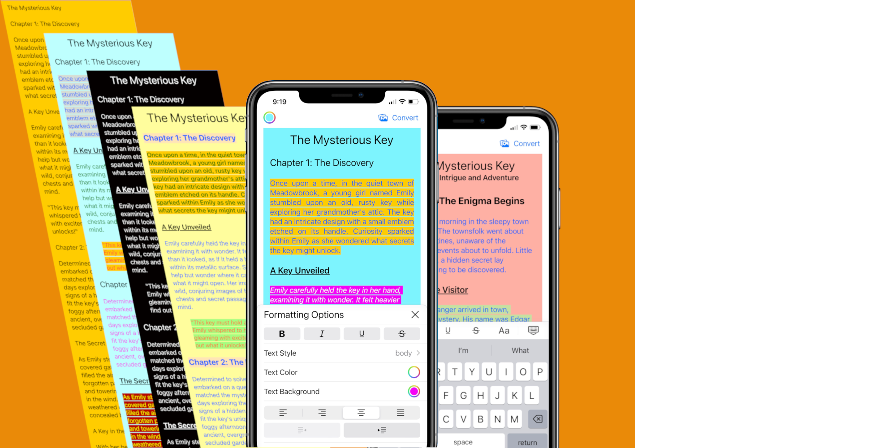
struct TextEditorView: UIViewRepresentable { func makeUIView(context: Context) -> CustomTextView { // Use TextKit2 let textContentStorage = NSTextContentS…
A physics study of eclipse by a gas giant seen from its moon.
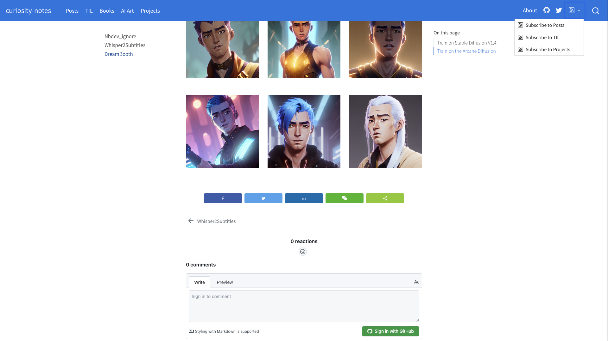
Hopefully everything you need for planning this beautiful hike.
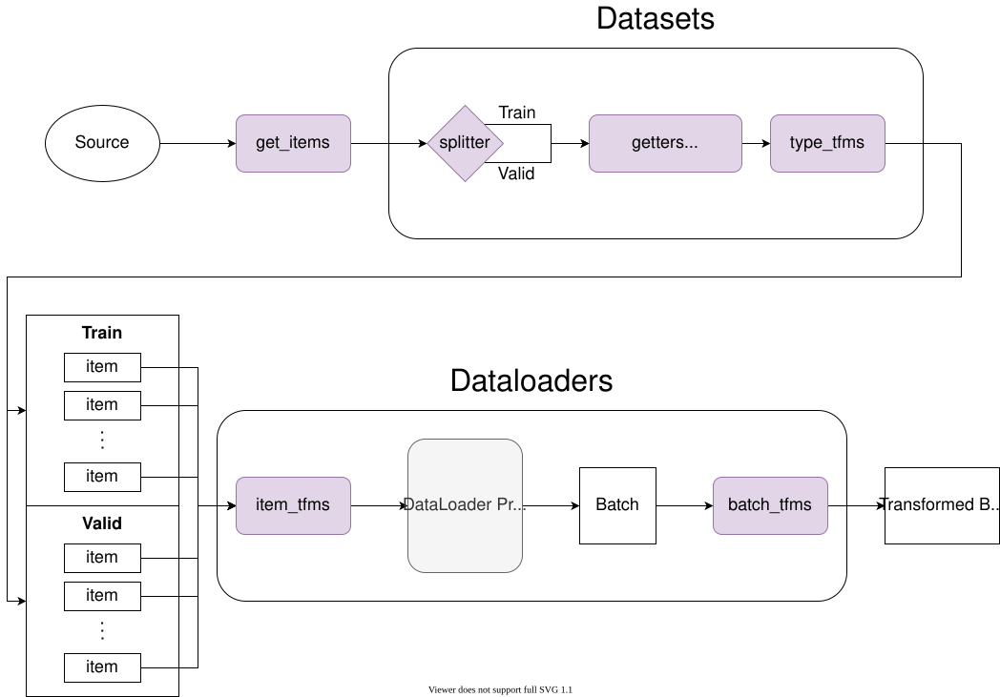
A visualization and explanation of how the DataBlock API hooks into different steps of the data transformation process to make it customizable.
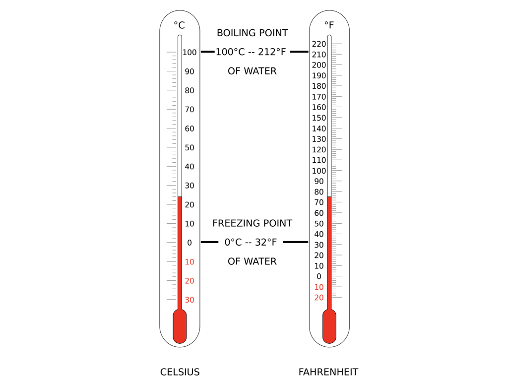
The most general interpretation of temperature and how its definition and scale have evolved.
When objects move at a constant speed through deep water, the intricate wave pattern can be derived by noticing that only waves stationary relative to the object persist.
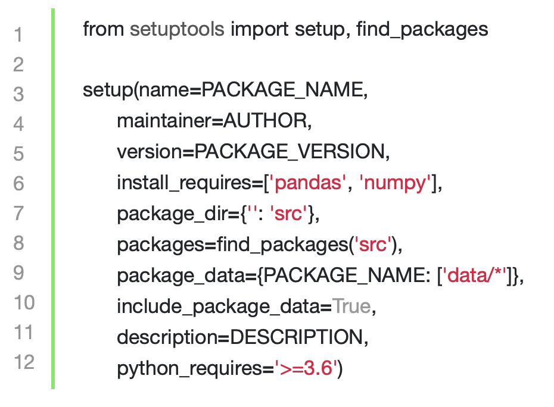
An example and explanation of some minimum things to configure in the setup.py
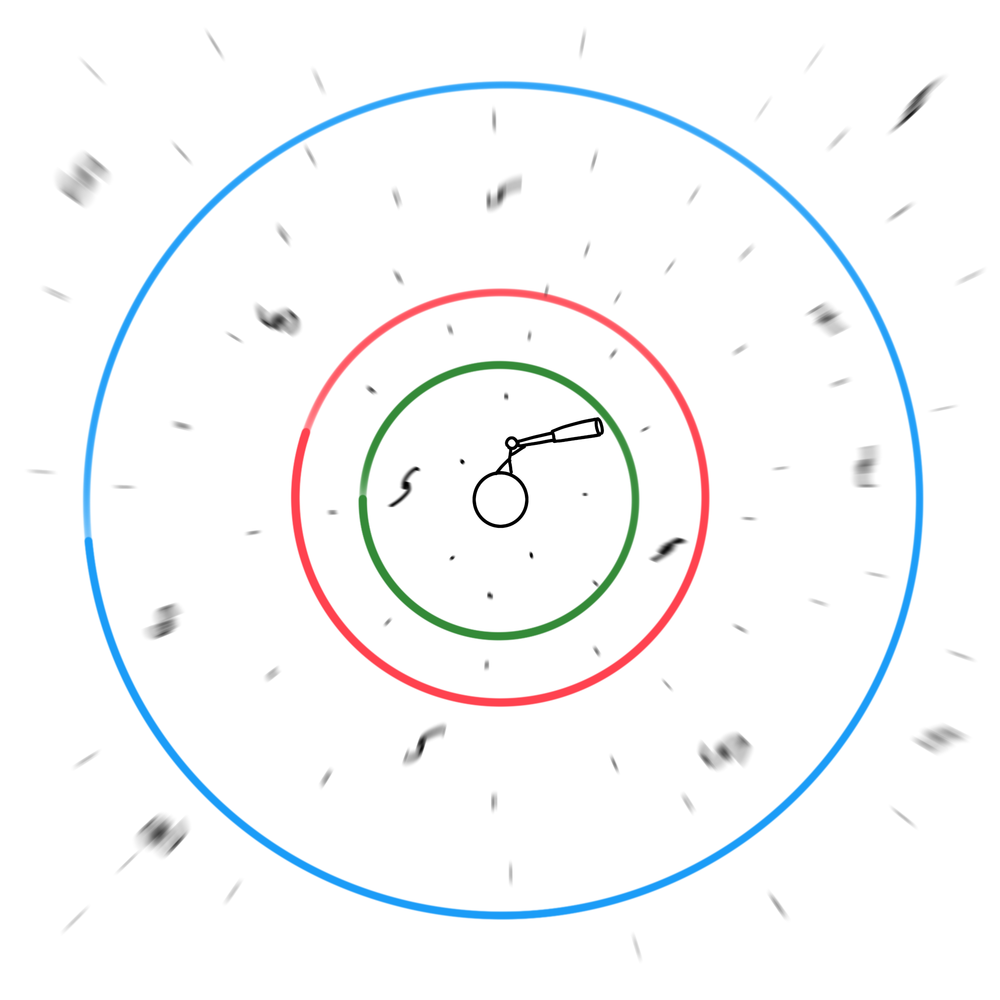
Understanding some basic yet counter-intuitive concepts in an expanding universe.
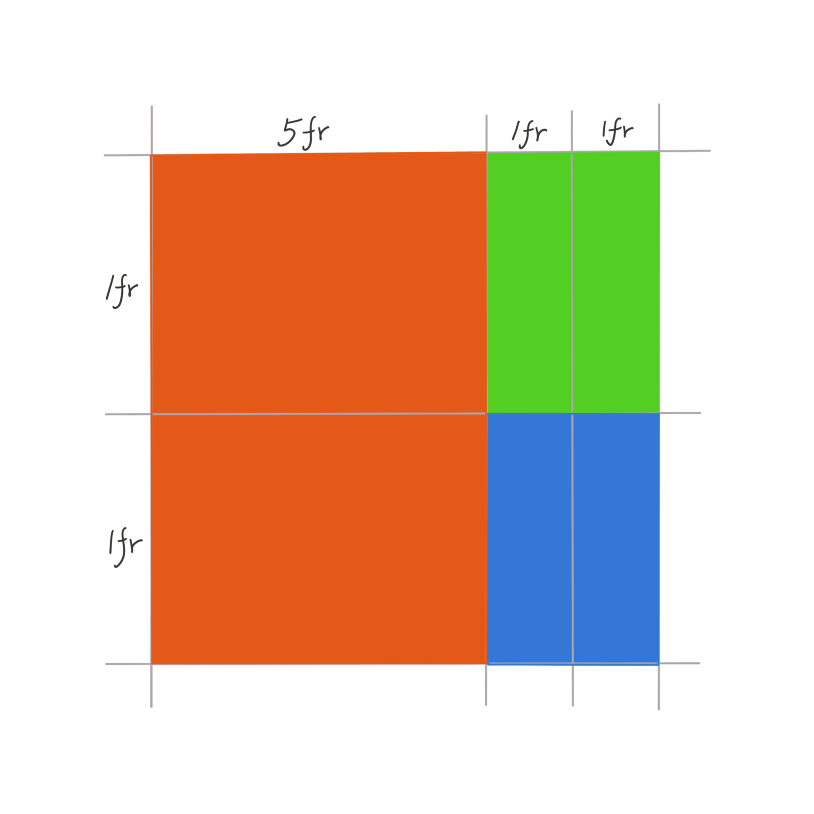
Start using this today, and skip all the headaches of webpage layout
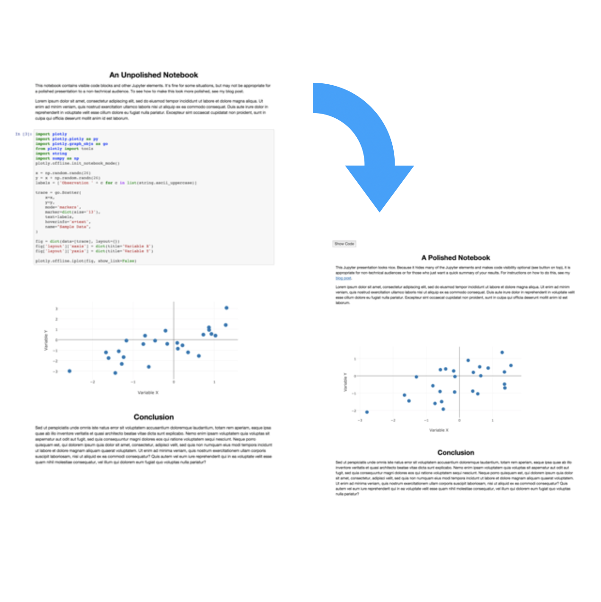
Generate an HTML file with a button to toggle code whenever the Jupyter notebook is saved
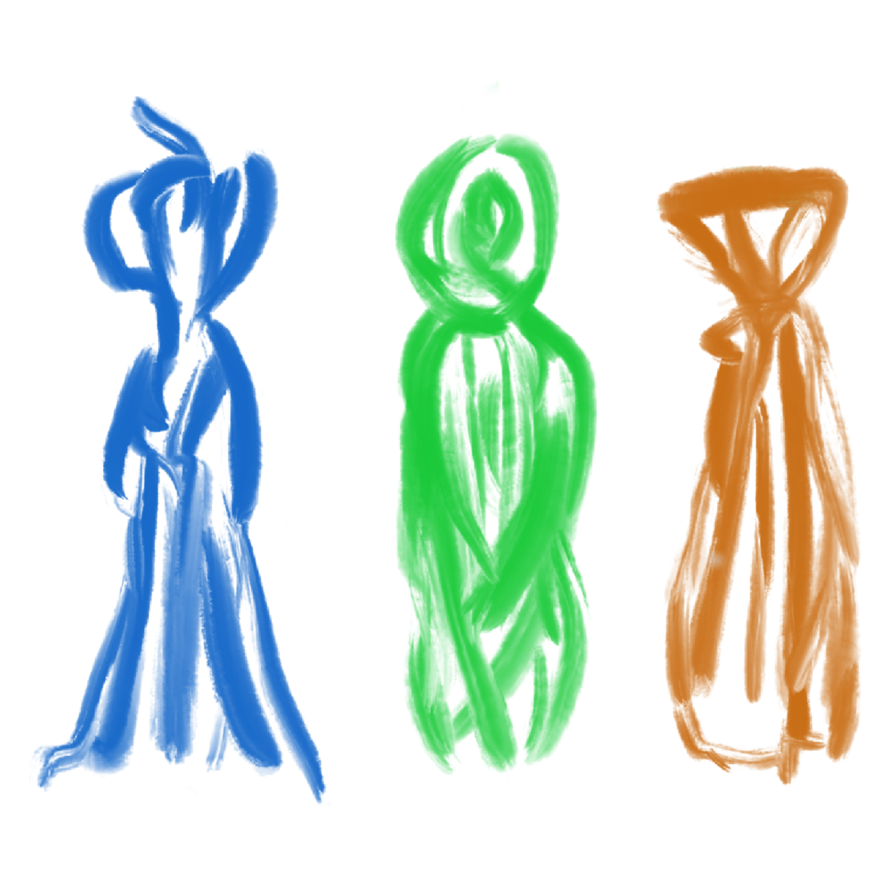
The logical paths I took to tackle the world’s hardest logic puzzle
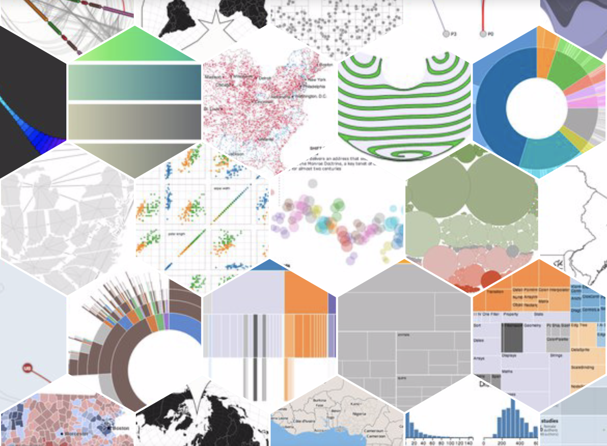
I summarize 7 basic concepts that I find very important to understand when learning D3.
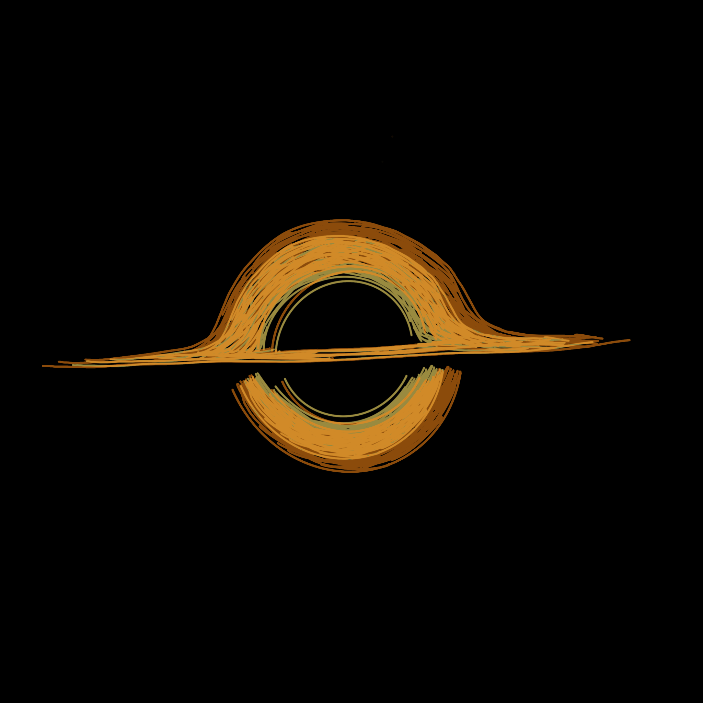
The Science of Interstellar